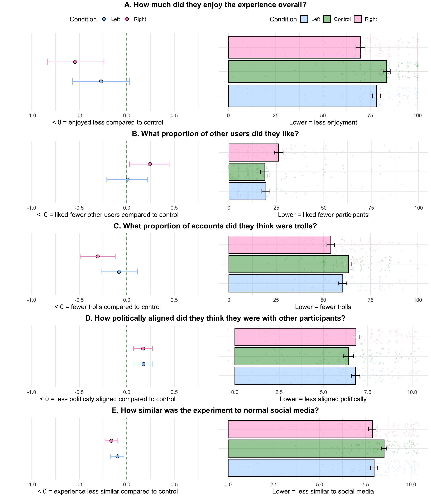
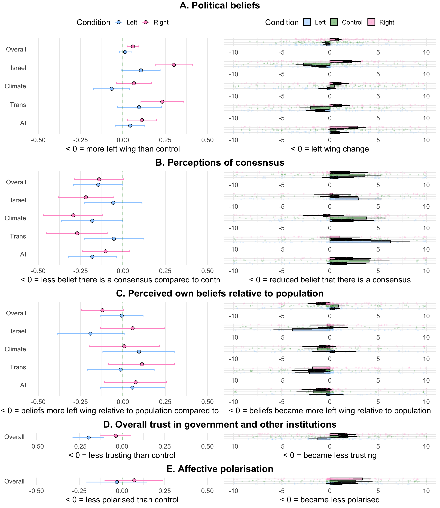
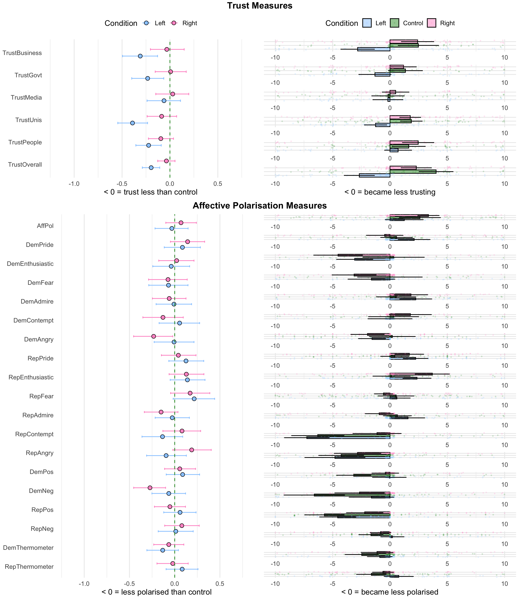
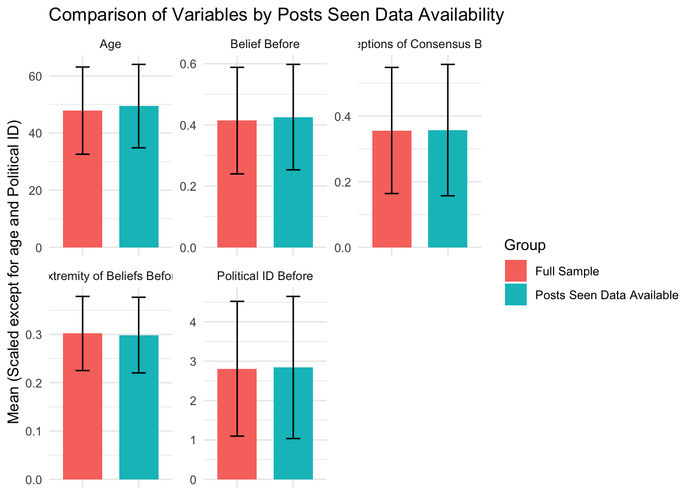
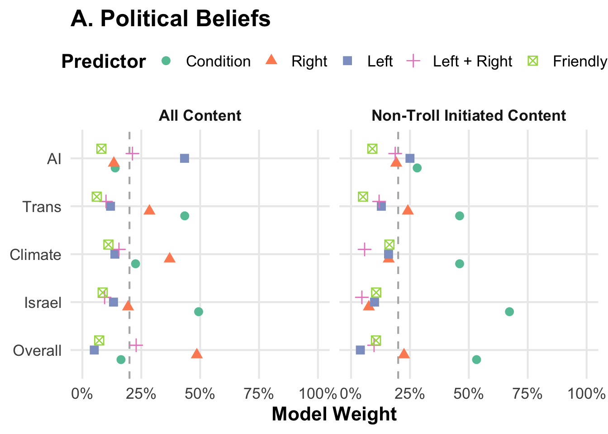
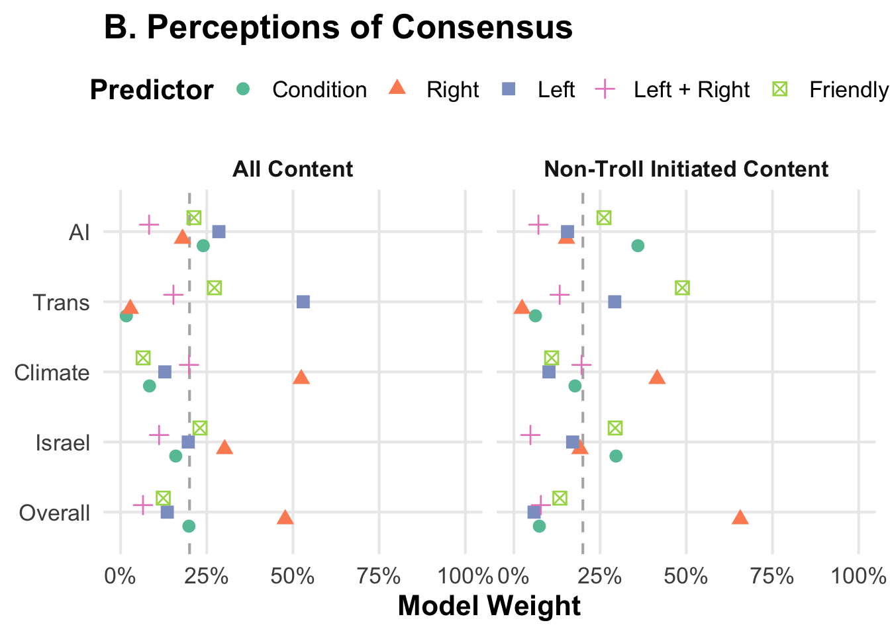
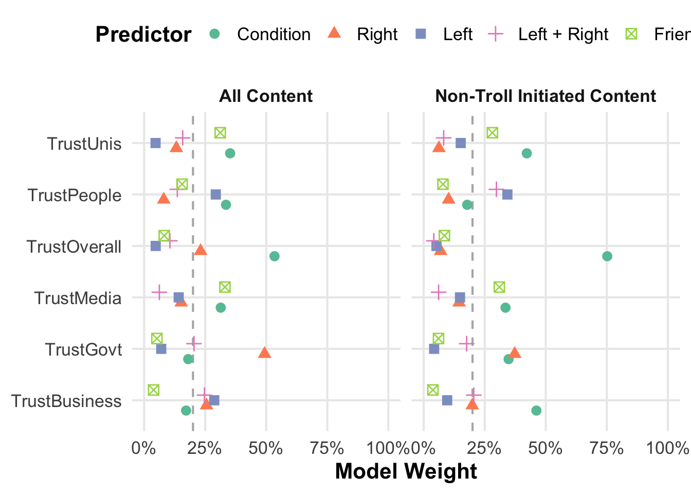
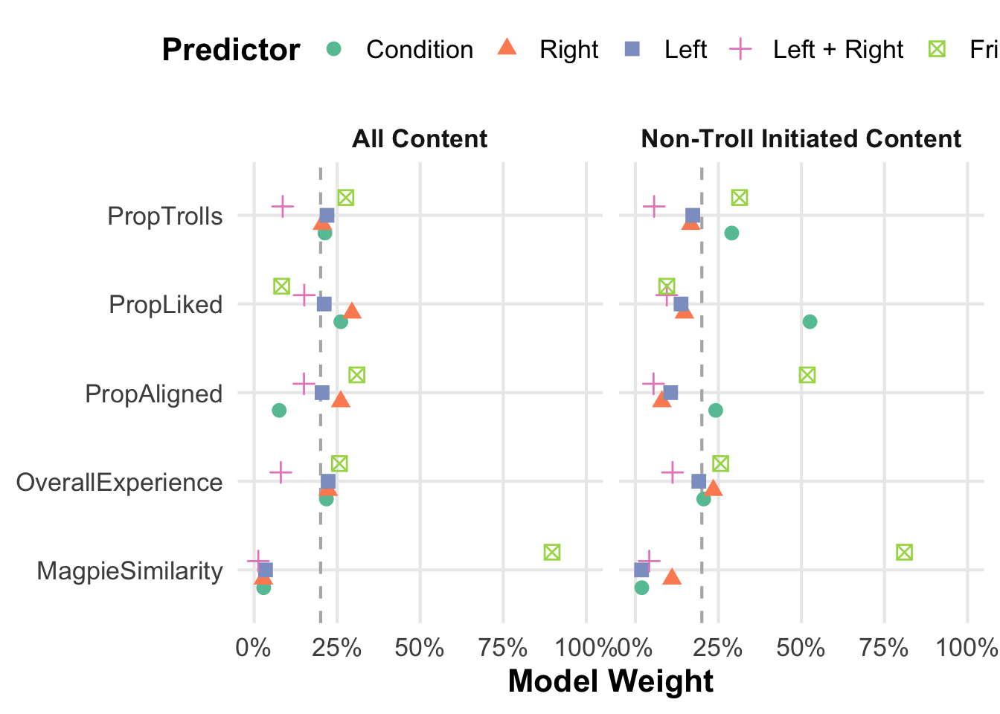

03_lm-condition-effects
Post experiment experience questions
Follow up enjoyment with prior beliefs by condition
$Control
Pearson's product-moment correlation
data: .x$BeliefBefore and .x$OverallExperience
t = 1.2617, df = 91, p-value = 0.2103
alternative hypothesis: true correlation is not equal to 0
95 percent confidence interval:
-0.07457958 0.32611827
sample estimates:
cor
0.1311207
$Left
Pearson's product-moment correlation
data: .x$BeliefBefore and .x$OverallExperience
t = 0.2639, df = 100, p-value = 0.7924
alternative hypothesis: true correlation is not equal to 0
95 percent confidence interval:
-0.1689605 0.2197288
sample estimates:
cor
0.0263812
$Right
Pearson's product-moment correlation
data: .x$BeliefBefore and .x$OverallExperience
t = 2.7221, df = 114, p-value = 0.007506
alternative hypothesis: true correlation is not equal to 0
95 percent confidence interval:
0.06778204 0.41085709
sample estimates:
cor
0.2470457 Before/After Change variables


Initial values of measures
Change variables
# A tibble: 40 × 3
Variable Mean SD
<chr> <dbl> <dbl>
1 AffPol 43.6 31.0
2 Belief 41.1 17.3
3 BeliefAI 42.6 17.1
4 BeliefClimate 36.4 23.2
5 BeliefIsrael 45.0 24.5
6 BeliefTrans 53.3 30.3
7 ConsensusAI 49.5 19.4
8 ConsensusClimate 47.2 22.1
9 ConsensusIsrael 39.9 21.0
10 ConsensusPolitics 36.9 19.1
# ℹ 30 more rowsExperience variables
# A tibble: 5 × 3
Variable Mean SD
<chr> <dbl> <dbl>
1 MagpieSimilarity 6.7 2.48
2 OverallExperience 8.11 1.92
3 PropAligned 58.8 20.8
4 PropLiked 76.8 23.0
5 PropTrolls 21.8 23.0 [1] "Mean initial overall trust: 42.74 SD: 21"Follow up unintuitive trust
# A tibble: 18 × 3
# Groups: Condition [3]
Condition Trust_Type Mean
<chr> <chr> <dbl>
1 Control TrustBusiness 39.3
2 Control TrustGovt 37.2
3 Control TrustMedia 36.4
4 Control TrustOverall 44.9
5 Control TrustPeople 57.5
6 Control TrustUnis 54.1
7 Left TrustBusiness 38.0
8 Left TrustGovt 36.0
9 Left TrustMedia 36.0
10 Left TrustOverall 43.7
11 Left TrustPeople 53.5
12 Left TrustUnis 55.1
13 Right TrustBusiness 34.0
14 Right TrustGovt 34.4
15 Right TrustMedia 30.7
16 Right TrustOverall 40.2
17 Right TrustPeople 50.7
18 Right TrustUnis 50.9Effect of posts seen on measures
[1] "Posts seen data is missing for 69 participants total"[1] "Breakdown by condition: "# A tibble: 3 × 2
Condition Missing
<chr> <int>
1 Control 16
2 Left 21
3 Right 32
# A tibble: 3 × 7
Condition var_troll mean_troll var_nontroll mean_nontroll var_all mean_all
<chr> <dbl> <dbl> <dbl> <dbl> <dbl> <dbl>
1 Control 0.00604 0.480 0 0 0.00604 0.480
2 Left 0.0156 0.474 0.0559 0.907 0.0143 0.540
3 Right 0.00934 0.557 0.0893 0.849 0.00798 0.620Model weights

comparison variable predictor term Estimate
1 All Content Belief Right prop_right_all 0.38357237
2 All Content BeliefClimate Right prop_right_all 0.64424228
3 All Content BeliefIsrael Right prop_right_all 0.78614529
4 All Content BeliefTrans Right prop_right_all 0.71996266
5 Non-Troll Content Belief Right prop_right_nontroll 0.41792732
6 Non-Troll Content BeliefClimate Right prop_right_nontroll 0.05453933
7 Non-Troll Content BeliefIsrael Right prop_right_nontroll 0.38616761
8 Non-Troll Content BeliefTrans Right prop_right_nontroll 1.05743333
Q2.5 Q97.5 credible
1 0.131133725 0.6226170 TRUE
2 -0.040060340 1.3302225 FALSE
3 0.002160981 1.5571046 TRUE
4 -0.143145958 1.5578907 FALSE
5 0.024904969 0.8095369 TRUE
6 -1.047135873 1.1497061 FALSE
7 -0.939617479 1.7350034 FALSE
8 -0.354226448 2.5123924 FALSE comparison variable predictor term Estimate Q2.5
1 All Content BeliefAI Left prop_left_all -0.6843320 -1.294245
2 Non-Troll Content BeliefAI Left prop_left_nontroll -0.4458092 -1.107875
Q97.5 credible
1 -0.07954381 TRUE
2 0.21105378 FALSE
comparison variable predictor term Estimate Q2.5
1 All Content ConsensusClimate Right prop_right_all -1.6731141 -2.977130
2 All Content ConsensusIsrael Right prop_right_all -0.9691463 -2.103849
3 All Content ConsensusPolitics Right prop_right_all -0.7455760 -1.838563
Q97.5 credible
1 -0.4139132 TRUE
2 0.1969453 FALSE
3 0.3698206 FALSE comparison variable predictor term Estimate Q2.5
1 All Content ConsensusAI Left prop_left_all -0.9308079 -2.042159
2 All Content ConsensusTrans Left prop_left_all 2.2601810 1.016939
Q97.5 credible
1 0.1221907 FALSE
2 3.5315037 TRUE comparison variable predictor term Estimate
1 Non-Troll Content ConsensusClimate Right prop_right_nontroll -2.140619
2 Non-Troll Content ConsensusPolitics Right prop_right_nontroll -2.732574
Q2.5 Q97.5 credible
1 -4.317341 0.0237172 FALSE
2 -4.496405 -0.9071316 TRUE comparison variable predictor term Estimate
1 Non-Troll Content ConsensusAI Friendly prop_friendly_all 1.464252
2 Non-Troll Content ConsensusIsrael Friendly prop_friendly_all -1.854725
3 Non-Troll Content ConsensusTrans Friendly prop_friendly_all -2.977006
Q2.5 Q97.5 credible
1 -0.3562865 3.3089598 FALSE
2 -4.7578840 0.8532314 FALSE
3 -5.4284099 -0.8250210 TRUE
comparison variable predictor term Estimate Q2.5
1 All Content TrustMedia Friendly prop_friendly_all -1.410694 -3.700553
2 Non-Troll Content TrustMedia Friendly prop_friendly_all -1.410694 -3.700553
Q97.5 credible
1 0.6908346 FALSE
2 0.6908346 FALSE comparison variable predictor term Estimate
1 All Content TrustPeople Left prop_left_all 0.541932
2 Non-Troll Content TrustPeople Left prop_left_nontroll 1.148146
Q2.5 Q97.5 credible
1 -0.3710423 1.448309 FALSE
2 0.1481005 2.202613 TRUE comparison variable predictor term Estimate Q2.5
1 All Content TrustGovt Right prop_right_all 1.629265 0.3550292
2 Non-Troll Content TrustGovt Right prop_right_nontroll 2.213216 0.2501068
Q97.5 credible
1 2.816993 TRUE
2 4.031995 TRUE
comparison variable predictor term Estimate
1 All Content MagpieSimilarity Friendly prop_friendly_all -1.6808830
2 All Content OverallExperience Friendly prop_friendly_all -0.2589796
3 All Content PropAligned Friendly prop_friendly_all -2.7068409
4 All Content PropLiked Friendly prop_friendly_all -0.1157403
5 All Content PropTrolls Friendly prop_friendly_all 1.3616180
6 Non-Troll Content MagpieSimilarity Friendly prop_friendly_all -1.6808830
7 Non-Troll Content OverallExperience Friendly prop_friendly_all -0.2589796
8 Non-Troll Content PropAligned Friendly prop_friendly_all -2.7068409
9 Non-Troll Content PropLiked Friendly prop_friendly_all -0.1157403
10 Non-Troll Content PropTrolls Friendly prop_friendly_all 1.3616180
Q2.5 Q97.5 credible
1 -2.747392 -0.6741853 TRUE
2 -0.974516 0.4058715 FALSE
3 -5.329490 -0.2997402 TRUE
4 -2.809002 2.7200964 FALSE
5 -1.228039 3.9770383 FALSE
6 -2.747392 -0.6741853 TRUE
7 -0.974516 0.4058715 FALSE
8 -5.329490 -0.2997402 TRUE
9 -2.809002 2.7200964 FALSE
10 -1.228039 3.9770383 FALSEBelief changes were best predicted by the troll condition, not by any broader norms of conversation that may have been induced by the trolls.
# A tibble: 5 × 5
variable r t df p
<chr> <dbl> <dbl> <int> <chr>
1 BeliefAIChange 0.104 1.62 240 0.107
2 BeliefClimateChange 0.064 0.992 240 0.322
3 BeliefIsraelChange 0.124 1.94 240 0.054
4 BeliefTransChange 0.16 2.51 240 0.013
5 BeliefChange 0.215 3.40 240 0.001# A tibble: 5 × 5
variable r t df p
<chr> <dbl> <dbl> <int> <chr>
1 ConsensusPoliticsChange -0.09 -1.40 240 0.164
2 ConsensusAIChange 0.042 0.646 240 0.519
3 ConsensusTransChange -0.095 -1.47 240 0.142
4 ConsensusClimateChange -0.153 -2.40 240 0.017
5 ConsensusIsraelChange -0.085 -1.32 240 0.187